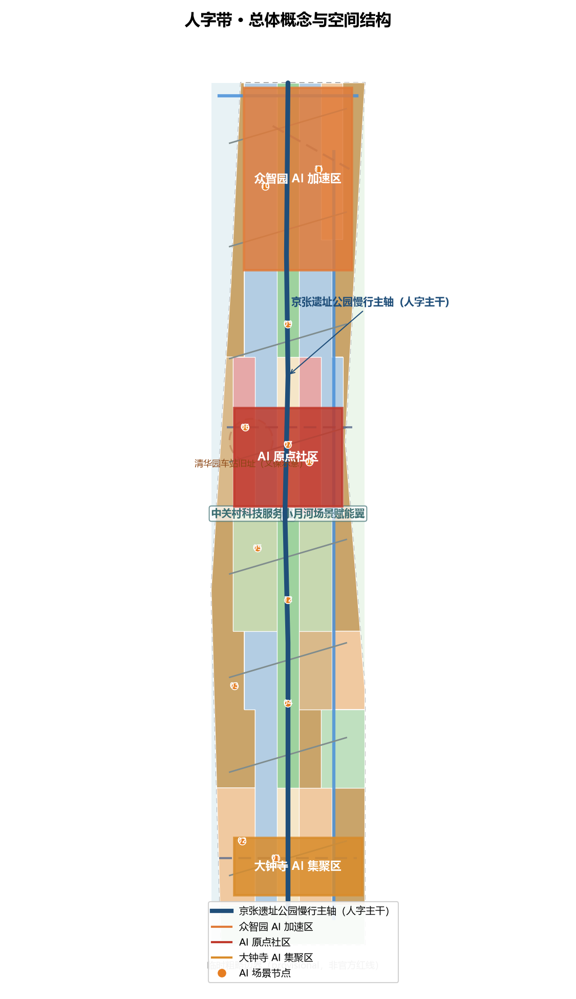
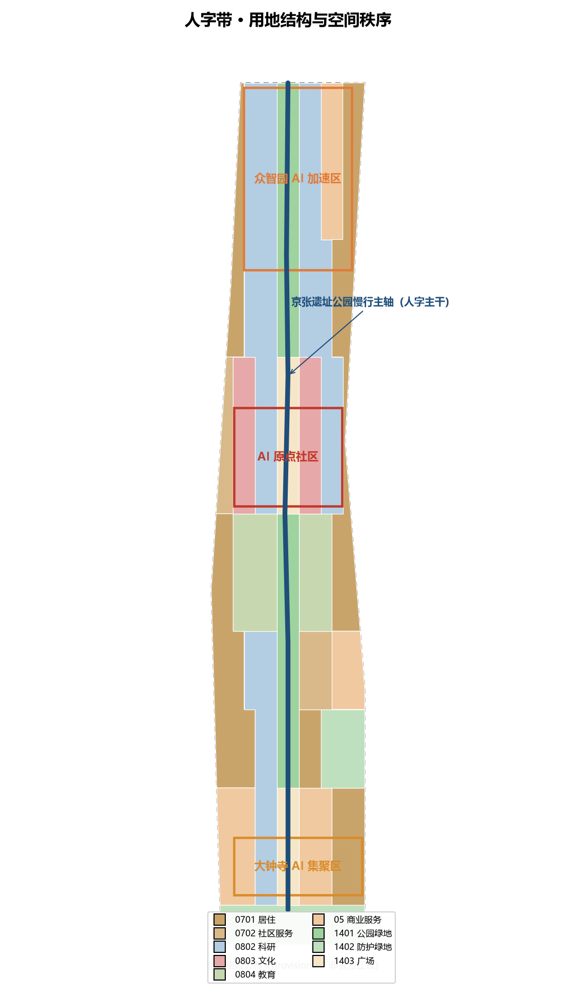
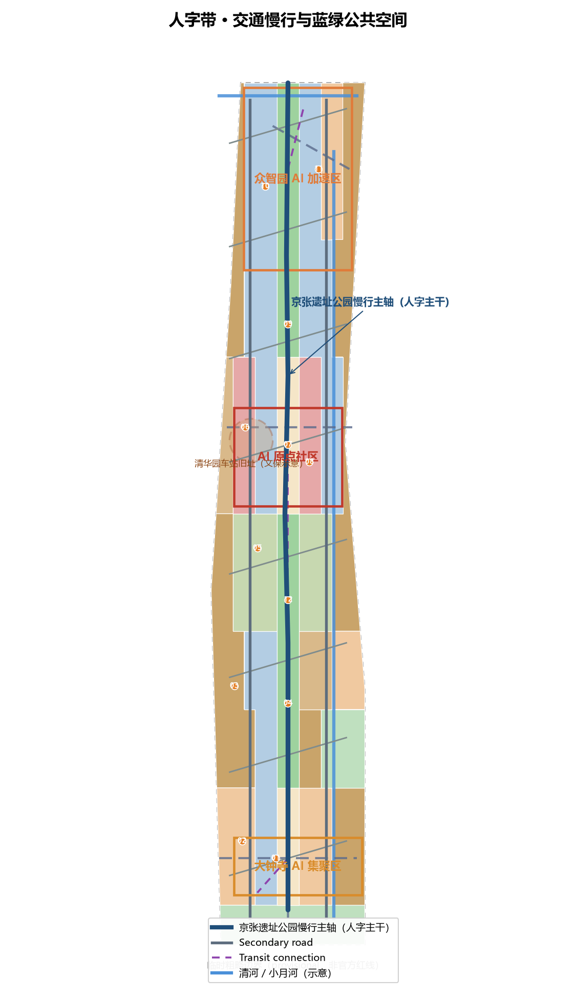
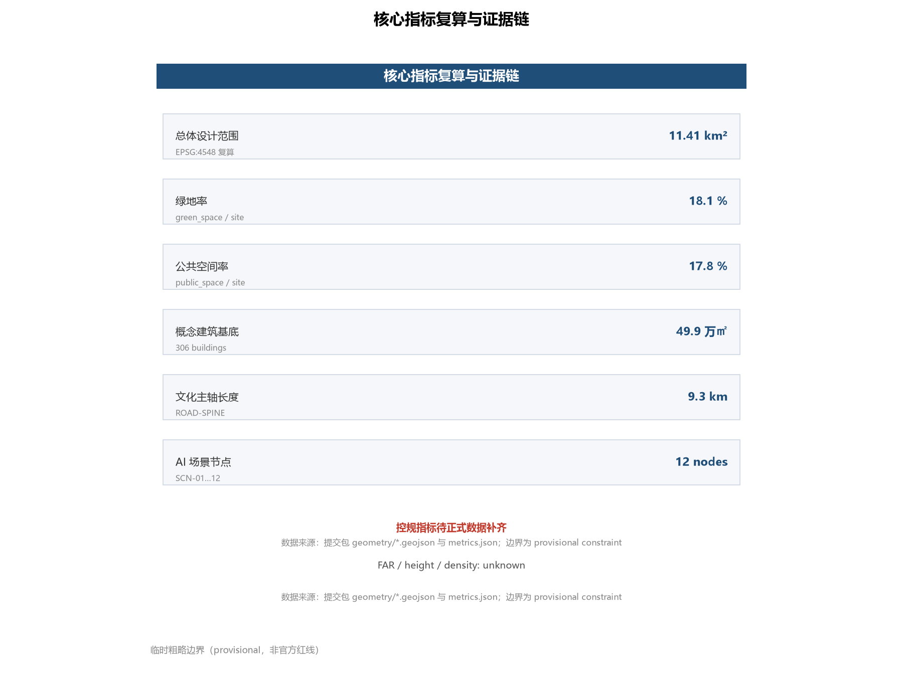
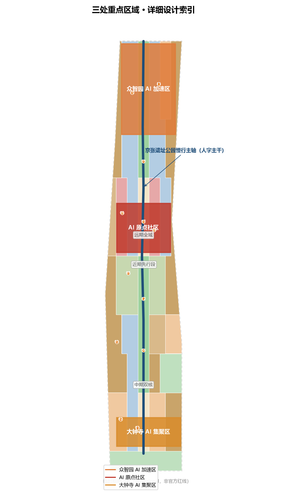

总览地图
一轴·三核·两翼·十二节点：京张遗址公园慢行主轴串联众智园、AI原点社区、大钟寺三核，西侧中关村科技服务翼与东侧小月河场景赋能翼经八条人字形联络路渗透。
三层范围
统筹研究范围约43.6 km²（产业战略）→ 总体设计范围约11.4 km²（控规深度城市设计）→ 重点区域约368.4公顷（详细设计）。
控规指标待正式数据补齐
临时粗略边界（provisional，非官方红线）；控规指标（容积率/建筑高度）待正式数据补齐后复算。
重点区域
一轴·三核·两翼·十二节点：京张遗址公园慢行主轴串联众智园、AI原点社区、大钟寺三核，西侧中关村科技服务翼与东侧小月河场景赋能翼经八条人字形联络路渗透
重点区域
重点区域
用地分区
九类用地无缝隙覆盖：科研0802、教育0804、文化0803、商业05、公园绿地1401、广场1403、居住0701、社区服务0702、防护绿地1402。

交通慢行 / 蓝绿公共空间
慢行主轴优先、三核轨道接驳、两翼微循环；绿道主轴约9.3 km，概念路网约43 km。
一轴一廊两带：遗址公园活力带、清河/小月河滨水廊道、两翼社区绿带；绿地率与公共空间率见核心指标。

建筑
306栋概念建筑基底约49.9万㎡，标注为概念体量，不构成法定拆改留结论。

更新项目
近期文化主轴与原点社区 → 中期众智园与大钟寺双核 → 远期全域缝合；分期为概念建议。

AI 场景
12张AI场景卡，含3个产业测试验证场景（众智园测试验证场、机器人配送试点、原点广场智能导览）；5类用户画像；3个AI朝圣地标。
核心指标
| Metric | Value | Formula / Source |
|---|---|---|
| site_area_sqm | 11412825 | polygon_area(site_boundary) · EPSG:4548 |
| green_ratio | 18.1% | green_space_area / site_area |
| public_space_ratio | 17.8% | public_space_area / site_area |
| building_footprint_area_sqm | 498605 | sum(building footprints) |
| heritage_spine_length_m | 9328 | line_length(ROAD-SPINE) |
| road_network_length_m | 42974 | sum(ROAD_CENTERLINE) |
| scenario_node_count | 12 | count(SCENARIO_NODE) |
| floor_area_ratio / building_height_m | 控规指标待正式数据补齐 | 待官方控规条件 |
任务覆盖
公告1.3/1.4/1.5任务与智能体任务agent.1–agent.6全覆盖，见compliance_matrix.json。
自检状态
确定性校验 / 空间复核 / 视觉复核 / 专业证据复核 四门自检，见self_check.json。
来源
OFFICIAL-ANNOUNCEMENT · AGENT-TASKBOOK · BOUNDARY-SOURCE (provisional) · KEY-AREA-SOURCE (provisional) · SITE-PACKAGE · SOURCE-REGISTRY · PROCESSED-FACT-PACK
假设
临时粗略边界（provisional，非官方红线）；控规指标（容积率/建筑高度）待正式数据补齐后复算。